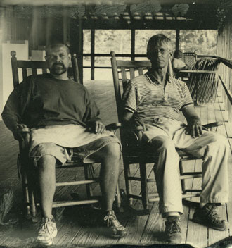

Biography Patrick Grigsby earned a Bachelor of Fine Arts degree in Graphic Design from the University of Florida in 1993. After working as a designer for several years, he joined the faculty in Graphic Design Technology at Santa Fe College in Gainesville, FL in 1996. In 2000, he became coordinator for Graphic Design Technology, one of Santa Fe’s showcase programs. In 2004, he launched the Interactive Media Production certificate program at Santa Fe focusing on DVD project development, earning the program a nationally recognized League for Innovation “Innovation of the Year” achievement throughout the nation’s community colleges. In 2006, Patrick returned to the University of Florida School of Art and Art History to concentrate on his love for print and lithography in a Master of Fine Arts degree in Printmaking which he completed in 2009. Also in 2009, sixteen hybrid digital and lithographic images were selected by CVS Pharmacy and the City of Gainesville for an Art in Public Places award. This public installation of digital prints has also won a City of Gainesville Beautification Award. Patrick continues to teach courses in Printmaking, Drawing, Interdisciplinary Study and Art for Non Majors at the UF School of Art and Art History. Patrick’s print works have been exhibited regionally and nationally. |
 |
Patrick Grigsby (left) with University of Florida Associate Professor of Printmaking Robert Mueller. Wet plate collodion photograph taken at Penland School of Crafts by Heather F. Wetzel, Summer 2008. |
|
|
© Patrick Grigsby 2012 |
|